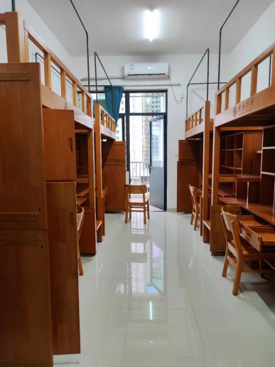
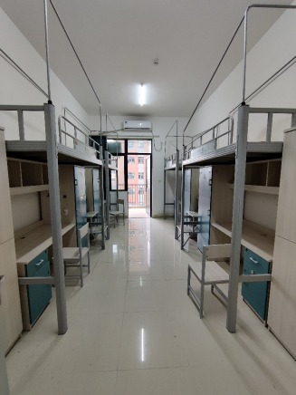

中山大学（Sun Yat-sen University），简称“中大”，由中华人民共和国教育部直属，是教育部、国家国防科技工业局和广东省共建的综合性全国重点大学，位列首批国家“双一流”A类、“985工程”、“211工程”，入选国家“珠峰计划”、“111计划”、“2011计划”、卓越法律人才教育培养计划、卓越医生教育培养计划、国家大学生创新性实验计划、国家级大学生创新创业训练计划、国家建设高水平大学公派研究生项目、新工科研究与实践项目、全国深化创新创业教育改革示范高校、国家大学生文化素质教育基地、国家创新人才培养示范基地、国家国际科技合作基地、首批高等学校科技成果转化和技术转移基地、学位授权自主审核单位等，是中国高校行星科学联盟、中国人工智能教育联席会、中国自由贸易试验区研究院联盟、大学通识教育联盟、粤港澳高校联盟、粤港澳大湾区物流与供应链创新联盟成员。 1924年，孙中山先生亲手将广州地区多所高校整合创立国立广东大学。学校于1926年定名为国立中山大学。今日的中山大学，由1952年院系调整后分设的中山大学和中山医科大学于2001年10月合并而成。 截至2020年9月，中山大学由广州校区、珠海校区、深圳校区三个校区、五个校园及十家附属医院组成；开设136个本科专业；有博士后科研流动站45个，一级学科博士点51个，一级学科硕士点59个，专业学位类别37种 。
|  |  |
版权所有: ©H7JH.github.com